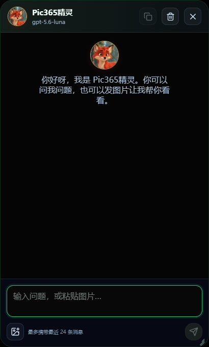

文字与图片问答
可以询问平台使用方法，也可以上传或粘贴图片请精灵观察。一次最多携带 3 张图片，单张不超过 15MB。
精灵应成为贯穿全站的创作副驾驶：理解图片与目标，推荐正确工作区，协助准备提示词和素材，并在生成前后帮助用户发现问题。
页面右下角的狐狸头像是入口。登录后可以发送文字或图片，让精灵识别、分析并回答问题。

可以询问平台使用方法，也可以上传或粘贴图片请精灵观察。一次最多携带 3 张图片，单张不超过 15MB。
最多携带最近 24 条消息作为上下文，适合逐步完善提示词、反复讨论图片问题。
支持复制单条、复制全部、删除单条和清空聊天记录。精灵回答会显示本次实际聊天积分。
桌面端可拖动头像和窗口位置，也可调整窗口大小；缩小后不遮挡主要创作区域。
用户描述目标后，判断应进入灵感生图、批量生图、无限画布、电商套图还是资产库，并给出最短操作路径。
把口语需求整理成可执行提示词，检查主体、构图、光线、风格与限制条件，并生成精简版或专业版。
检查清晰度、主体遮挡、角度互补性与内容冲突；建议哪张做母版，其他图片分别承担什么角色。
检查模型支持的参考图数量、格式、尺寸、宽高比、预计积分和提示词编号，减少可预防的失败。
把渠道报错转换为用户能理解的原因，指出是尺寸、格式、参考图、余额、队列还是上游服务问题。
对比母版与结果，检查人物身份、商品结构、Logo、文字、配件和瑕疵，列出可采用或需返修的理由。
根据画面建议名称、标签和分类，发现近似或重复资产，并建议放入哪个项目或团队目录。
识别用户当前停在哪一步，用短指令引导下一步；新用户可开启分步教学，熟练用户只看检查结论。
| 所在页面 | 精灵主动理解 | 可建议或准备 | 必须用户确认 |
|---|---|---|---|
| 灵感生图 | 参考图、提示词、模型和尺寸 | 补全提示词、母版建议、参数体检 | 提交生成、实际扣费 |
| 无限画布 | 当前选中实体、引用和生成分支 | 分支命名、引用角色、版本比较结论 | 锁定、删除、采用最终版本 |
| 电商套图 | 商品身份规则、素材完整度和当前阶段 | 缺图清单、镜头方案、一致性质检 | 批量生成、覆盖采用版本、交付 |
| 媒资管理 | 当前目录、资产内容、标签和权限 | 批量命名、分类、标签、重复项建议 | 共享、移动回收站、永久删除 |
精灵应知道用户正在哪个工作区、选中了什么、哪些设置已填写，而不是让用户重复描述屏幕内容。
优先指出当前阻塞项，例如“还没有选择母版”，再提供可展开的详细说明。
提示词、名称、标签和分类建议提供“填入但不提交”，让用户预览、修改后确认。
明确显示动作对象、预计积分和影响范围。未确认前只能准备操作，不能自动执行。
| 优先级 | 功能 | 原因 |
|---|---|---|
| 第一阶段 | 当前页面感知、功能问答、提示词改写、参考图检查 | 价值高、风险低，能立刻减少新用户困惑 |
| 第二阶段 | 生成前体检、错误解释、结果对比质检 | 直接降低失败率和重复扣费 |
| 第三阶段 | 一键填入提示词和参数、资产命名分类建议 | 从回答升级为协作，但不越权提交 |
| 第四阶段 | 经确认后执行跨工作区操作、任务跟踪与交付清单 | 自动化价值最大，需要完整权限与审计机制 |
只在明确阻塞、连续失败或用户开启教学模式时轻量提示；普通创作过程中保持安静。
可以准备提示词和参数，但最终生成会扣费，必须展示预计积分并由用户确认。
删除、永久删除、共享、替换母版和覆盖最终版本都列为受保护动作，要求明确确认并记录结果。